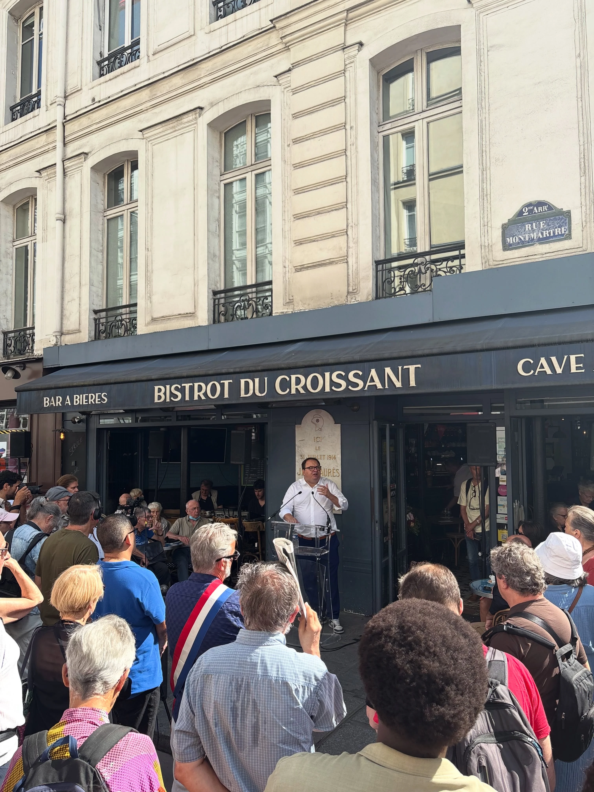
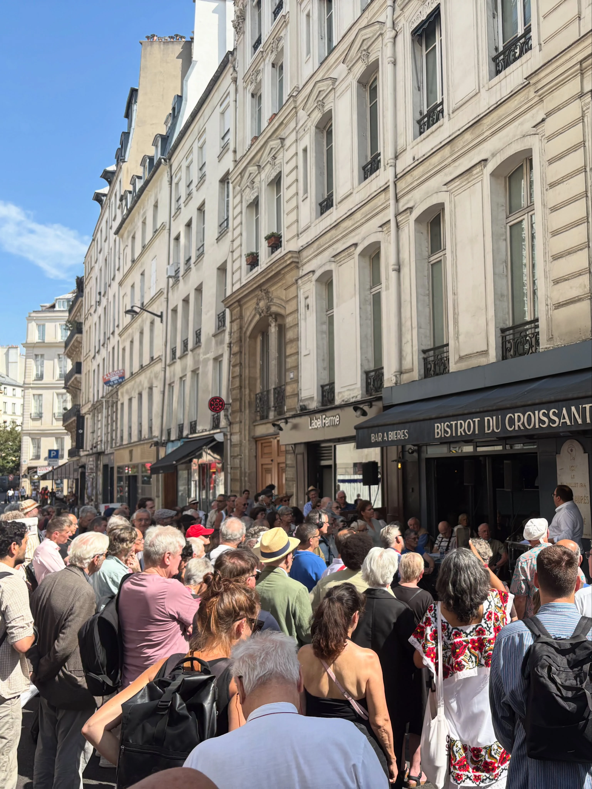
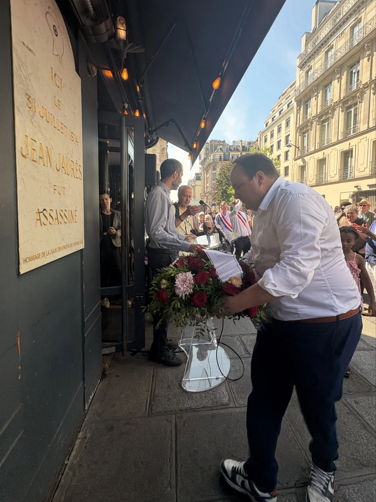

Commémoration relayée
Fabien Gay rend hommage à Jean Jaurès au Café du Croissant
Date de mise à jour indiquée par Facebook · 31 juillet 2026
Repères éditoriaux
Fabien Gay revient sur l’hommage rendu à Jean Jaurès devant le Café du Croissant le 31 juillet. Il rappelle ce que le fondateur de L’Humanité continue d’apporter au combat contre l’extrême droite.
Texte de la publication · Fabien Gay
Il y a 112 ans, Jean Jaurès, fondateur de l'Humanité, était assassiné.
Comme chaque 31 juillet, nous lui avons rendu hommage ce matin au Café du Croissant pour ne pas oublier que son action et sa pensée continuent d’inspirer nos combats, dans un contexte où le combat contre l’extrême droite et pour la paix est plus que jamais nécessaire et d’actualité.



Sources
Fabien Gay · publication relayée par le PCF 79 · bibliothèque Facebook · AR-0002-FB-00721
À lire aussi · L'élan de la Libération de Paris · Le lien d’origine